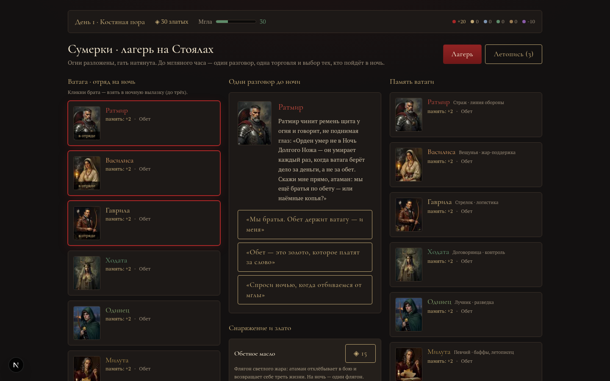
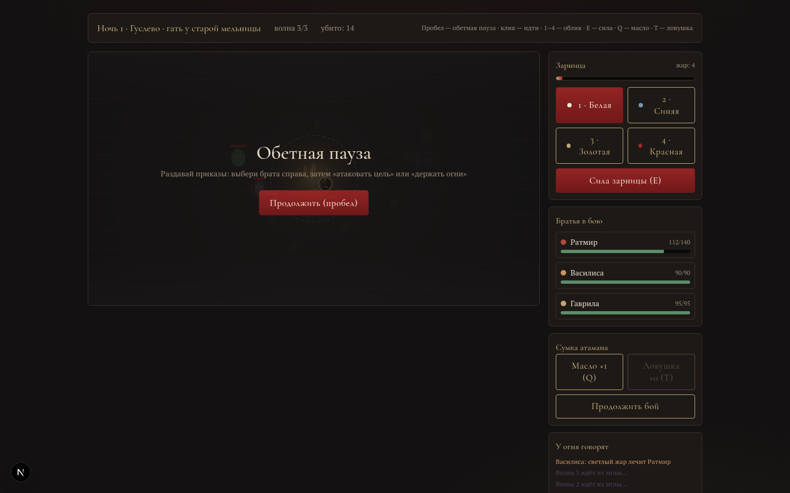

„ЗАРНИЦА · Три ночи“ — работающий прототип ядра: три дня и три ночи, все четыре системы в одном билде. Реальное время с обетной паузой и четырьмя обликами зарницы; лестница разрыва спутников от сомнения до „ночи ножей“; право слова после боя; фракции, золото и Мгла как мировые ресурсы.

